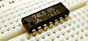

Simcir
the circuit simulatorSimcir
the circuit simulator
Simcir
the circuit simulatorSimcir
the circuit simulatorLast Update: 2009/12/21

Simcir is a simple simulator of logic circuit.
Let's try your logic!
Simcir requires a browser or Java Runtime Environment that support Java1.1.
Successfully tested on following environment.
simcir.jar is executable-jar file. double click the file from GUI, or execute from console.
$ java -jar simcir.jar
You can set the file of default circuit as parameter 'file'.
Example
<applet code="simcir.Main" width="600" height="400" archive="simcir.jar">
<param name="file" value="sample/rs-ff.cml"/>
</applet>
v1.2.1 (July 6th 2000)
v1.2 (March 7th 1999)
v1.1 (February 7th 1999)
v1.0 (November 30th 1998)
v1.0b (November 12th 1998)
Copyright © Kazuhiko Arase